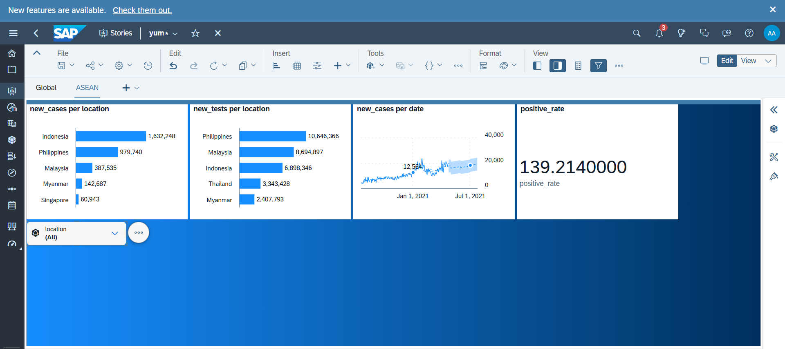
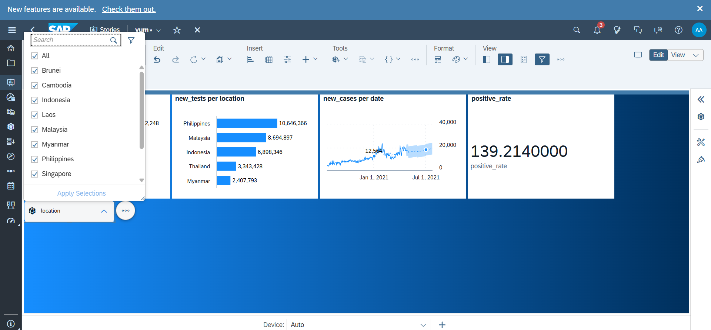

How it Made?
I've always enjoyed learning new things, especially when they let me explore tools I've never used before. One of those experiences was joining the ASEAN Data Science Explorers (ADSE) training program, where I had the opportunity to learn SAP Analytics Cloud (SAC) through a hands-on project using a public dataset.
The project started with a raw Excel file containing case counts, testing data, and vaccination statistics from countries around the world. Rather than jumping straight into visualization, I first learned how to build a proper data model in SAC by identifying which fields should be treated as measures or dimensions. One interesting challenge was handling cumulative metrics such as total cases, where I applied {Last Value by Date} exception aggregation so the numbers would reflect the latest recorded value instead of being incorrectly summed over time.

Technologies Used
Once the data model was ready, I transformed it into an interactive dashboard. I experimented with different visualization types, from ranked bar charts highlighting countries with the highest new cases and testing activity, to time series charts that tracked the progression of cases over time, complete with SAC's built-in forecasting feature. I also created a KPI indicator to monitor positivity rates and narrowed the analysis to the 11 ASEAN member countries using location filters, making it much easier to compare regional trends without the noise of global data. I tried customizing the dashboard's visual style (not really good as you can see, just a random gradient #willearnmore). It is still something I am learning, but it was a fun part of the process.

It's all about learning to present information in a way that supports better decisions. Applying ranking filters, removing aggregate categories such as "World" and continental rollups, and focusing on country-level comparisons made the analysis far more meaningful. Looking specifically at ASEAN also revealed differences in data availability, such as countries with much sparser testing records, reminding me that data should always be interpreted within its context. Fun, I'd love to learn more with it!